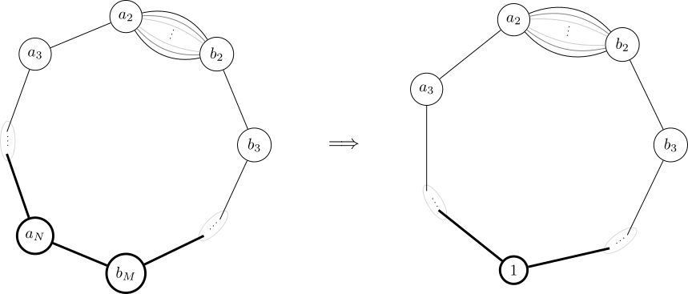

About
Research
Arithmetical Structures on Graphs
A local divisibility rule on vertex labels leads to a family of integer matrices generalizing the graph Laplacian. This project studies cycles with a multi-edge, using subdivision and a modified Euclidean algorithm to understand which labelings occur and how to count them. Advised by Alexander Díaz and Joel Louwsma.

Boolean Monomial Dynamical Systems
How long does a finite system take to reach periodic behavior? For Boolean monomial systems, this question leads to directed walks, primitive matrices, and the arithmetic of cycle lengths. The project investigates transient estimates from these structures, without enumerating all 2n states. Advised by Omar Colón.
Manuscript. Transient Length Bounds for Boolean Monomial Systems (in preparation)

5G RF Propagation Measurements
This project measured radio-frequency propagation at 28 and 39 GHz, simulated Vivaldi antennas, and developed a GNU Radio measurement system using software-defined radios for the 1.9 and 3.7 GHz bands. Advised by Rafael Solís.